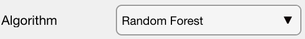

Figure 1: example of mask image for a metapelite from Himalaya published in Lanari & Duesterhoeft (2019). Each feature, here a mineral, is shown with a color. Note that all the pixels of this image have been classified.
Help file version 10.01.2024 by M. Tedeschi & P. Lanari
Table of content
Step 1 – Training Set
Step 2 – Classification Parameters (chemical system, algorithm, etc.)
Step 3 – Apply Classification
Additional tools: filtering options
Additional tools: mask analysis & visualisation
This help file contains a description of the tools available in the Classify section.
Compositional map classification is the process of categorising and labelling groups of pixels within a dataset based on their composition. It generates a mask image showing the distribution of each mask/class (i.e. features can be mineral/epoxy/glass, etc., e.g. Fig. 1). The methods implemented in XMapTools consist of supervised machine learning algorithms and require training data for a given number of masks (number of features). A training set is an ensemble of definitions containing a selection of pixels made using regions of interest for each mask. A classification is divided into four different stages:
Figure 1: example of mask image for a metapelite from Himalaya published in Lanari & Duesterhoeft (2019). Each feature, here a mineral, is shown with a color. Note that all the pixels of this image have been classified.
Create a phase definition object containing the selected training compositions using these tools to identify the features to be classified.
To start classification and create a training set, select Training Sets (Classification) from the secondary tree menu.
Display an intensity map by selecting the corresponding element in the primary tree menu and selecting Training Sets (Classification) in the secondary tree menu. Press the  button to add a new training set PhaseDef_1.
button to add a new training set PhaseDef_1.
Selecting the Phase Assistant option will display a Phase Assistant module with default mineral names (Fig. 2). Select the phase names and press the Apply button. Note that a database of mineral names is available in XMapTools. Changing the mineral name manually is possible, but will prevent automatic identification (e.g. for density values).
The name of a training set can be edited in the text box (to the right of the Add button in the training set section) before pressing  or in the secondary tree menu by double-clicking on the name.
or in the secondary tree menu by double-clicking on the name.
Figure 2: Phase Assistant with a selection of biotite, chlorite, garnet and muscovite.
Select a training set in the secondary tree menu and press the  button to add new phase definition(s).
button to add new phase definition(s).
If the Phase Assistant option is selected, a phase module containing default mineral names will be displayed (Fig. 2). Select the phase names and press the Apply button.
Note that the name of a phase definition object can be edited in the text box (right of the Add button in the training set section) before pressing  or in the secondary tree menu by double-clicking on the name. It is recommended to use the mineral names listed in the phase assistant to be compatible with the internal databases (e.g. for automatic definition of density values ).
or in the secondary tree menu by double-clicking on the name. It is recommended to use the mineral names listed in the phase assistant to be compatible with the internal databases (e.g. for automatic definition of density values ).
Select a phase definition object from the secondary tree menu. Select a ROI shape from the drop down menu to the right of the Add button. Press the  button to add a new ROI and immediately select an area of interest by clicking on the image.
button to add a new ROI and immediately select an area of interest by clicking on the image.
Multiple selections of ROIs with different shapes can be added to the same phase definition object by clicking again the  button again when a phase definition object is selected from the primary menu.
button again when a phase definition object is selected from the primary menu.
These tools are used to select an algorithm and the map data to be used for classification.
The aim is to create a list map to be used by the classification function. It is not necessary to use all available maps for classification; maps containing only noise are usually excluded. The detailed strategy will be described in a future paper (Lanari & Tedeschi, in prep).
 The list of map used by the classification function is displayed in this text field.
The list of map used by the classification function is displayed in this text field.
The Add Maps for Classification  button adds all maps available in the selected data category from the primary tree menu.
button adds all maps available in the selected data category from the primary tree menu.
The Edit Selected Map  /
/  button has two modes: add (plus icon) or remove (minus icon), depending on whether or not the selected map is already listed in the primary tree menu. Clicking the
button has two modes: add (plus icon) or remove (minus icon), depending on whether or not the selected map is already listed in the primary tree menu. Clicking the  button adds the selected map, while clicking the
button adds the selected map, while clicking the  button removes the selected map from the list.
button removes the selected map from the list.
It is possible to select several types of data to be used as input to the classification function. Note that for most algorithms, either the original data (maps) or the PCA data (PCA-M or PCA-N) must be selected. However, it is recommended to use maps + PCA-M + PCA-N for the random forest algorithm (Lanari & Tedeschi, in preparation).
The following data types are available:The principal components of a collection of points in a real coordinate space are a sequence of vectors consisting of best-fitting lines, each defined as one that minimises the mean squared distance of the points to the line. These directions form an orthonormal basis in which different individual dimensions of the data are linearly uncorrelated. The first principal component can equivalently be defined as a direction that maximises the variance of the projected data. Principal component analysis (PCA) is the process of calculating the principal components and using them to perform a change of basis on the data.
The Generate Principal Component Maps (PCA)  button calculates a map for each Principal Component and stores it in the Other category of the primary tree menu.
button calculates a map for each Principal Component and stores it in the Other category of the primary tree menu.
Select a map scaling method from the Map Scaling drop-down menu. Several methods are available (Robust, MinMax, Mean and NoScaling). The Robust method is recommended for best results.
The following options are available for data scaling:If selected, the Reprod. option controls the random number generator to ensure that results obtained using an algorithm with a random component (e.g. Random Forest) are reproducible for the seed value given in the text box. If the option is not selected, any classification using the Random Forest algorithm will converge to a slightly different result. The same result can be obtained by changing the seed value.
 The machine learning algorithm used for classification can be selected via the algorithm menu.
Classification algorithms will be described in a publication (Lanari & Tedeschi, in prep); a short summary is provided below:
A training set must be selected in the secondary tree menu in order to activate the Classify button.
The Classify (Train a Classifier & Classify)  button trains a new classifier and performs the classification using the algorithm selected in the menu and the specified set of maps.
button trains a new classifier and performs the classification using the algorithm selected in the menu and the specified set of maps.
A new figure containing up to four plots will open and be continuously updated during classification (e.g. Fig 3 for classification with the Random Forest algorithm). Do not close this figure until the classification is complete, otherwise the plots will not be displayed.
Figure 3: Plots for classification using the Random Forest algorithm. Top left: out-of-bag classification error vs. number of trees grown. The error value should be zero in most cases for a small number of trees. Top right: Predictor importance for the Random Forest classification. Cards with low predictor importance values can be eliminated without affecting the classification results. Bottom left: Confusion map of the training data set. Bottom right: Confusion plot of the test dataset. The numbers represent the number of data points.
Once the classification is complete, a new mask file is generated and stored under Mask Files in the secondary tree menu. The mask file is automatically selected and the mask image is displayed. Selecting a mask file also allows information about the classification to be displayed in the Information window (Fig. 4).
Figure 4: Classification information displayed when a mask file is selected from the secondary tree menu (available in XMapTools 4.3 and later).
 Select this option to hide pixels having a class probability lower than a given threshold (see below) for the selected mask file.
Select this option to hide pixels having a class probability lower than a given threshold (see below) for the selected mask file.
 Set the probability threshold used for hiding pixels (see above). This value should range between 0 and 1.
Set the probability threshold used for hiding pixels (see above). This value should range between 0 and 1.
 The button Create new mask file with pixels filtered by probability (all pixels below threshold) generate a new mask file after filtering.
This option replaces the BCR correction available in XMapTools 3 and is more adequate as only the miss-classified pixels are excluded.
The button Create new mask file with pixels filtered by probability (all pixels below threshold) generate a new mask file after filtering.
This option replaces the BCR correction available in XMapTools 3 and is more adequate as only the miss-classified pixels are excluded.
The modes of each class within a given region of interest can be exported using the tools provided in this section. Modes are given as surface fraction, calculated using the number of pixels of each class. For minerals, this can ultimately be extrapolated to volume percentage as discussed in Lanari & Engi (2017).
 Menu to select the ROI shape to be used to extract the local modes.
Menu to select the ROI shape to be used to extract the local modes.
The Add ROI button  allows a new region of interest (ROI) to be drawn on the figure. Note that a mask file must be selected before activating this mode.
The results are displayed in the right window as a table showing the modes and number of pixels for each class, and as a pie chart.
Note that the plot can be saved using the plot options located in the top right hand corner while the mouse pointer is over the plot.
allows a new region of interest (ROI) to be drawn on the figure. Note that a mask file must be selected before activating this mode.
The results are displayed in the right window as a table showing the modes and number of pixels for each class, and as a pie chart.
Note that the plot can be saved using the plot options located in the top right hand corner while the mouse pointer is over the plot.
A point counting subroutine is included in XMapTools for training purposes. Note that it is not recommended to use this method to estimate modes, but rather to use all pixels (see above).
 Set the number of unique points (with random positions) to be used for the point counting method.
Set the number of unique points (with random positions) to be used for the point counting method.
 Enable Monte Carlo simulation for point counting. When this option is selected, the point counting method is applied 1000 times to obtain a standard deviation (1-sigma) on the modes obtained. Note that the result obtained is equivalent to selecting N*1000 points.
Enable Monte Carlo simulation for point counting. When this option is selected, the point counting method is applied 1000 times to obtain a standard deviation (1-sigma) on the modes obtained. Note that the result obtained is equivalent to selecting N*1000 points.
 The Calculate Pseudo Modes (Point Count) button calculates pseudo modes using the point count method. N points, each with a unique set of coordinates, are generated and used to sample mask proportions and calculate pseudo modes.
The Calculate Pseudo Modes (Point Count) button calculates pseudo modes using the point count method. N points, each with a unique set of coordinates, are generated and used to sample mask proportions and calculate pseudo modes.
The Plot Compositions  button generates a plot using the data selected in the primary tree menu (either intensity, or a merged map) and the mask file selected in the secondary tree menu. An example is shown in Figure 5.
button generates a plot using the data selected in the primary tree menu (either intensity, or a merged map) and the mask file selected in the secondary tree menu. An example is shown in Figure 5.
Figure 5: Example of compositional plot generated using a merged map (expressed in oxide wt%) and the mask file shown in Fig. 1